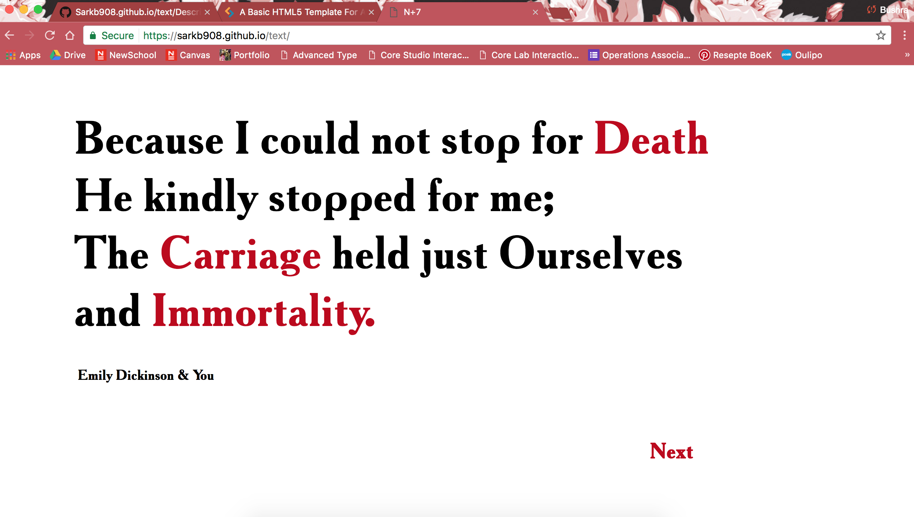
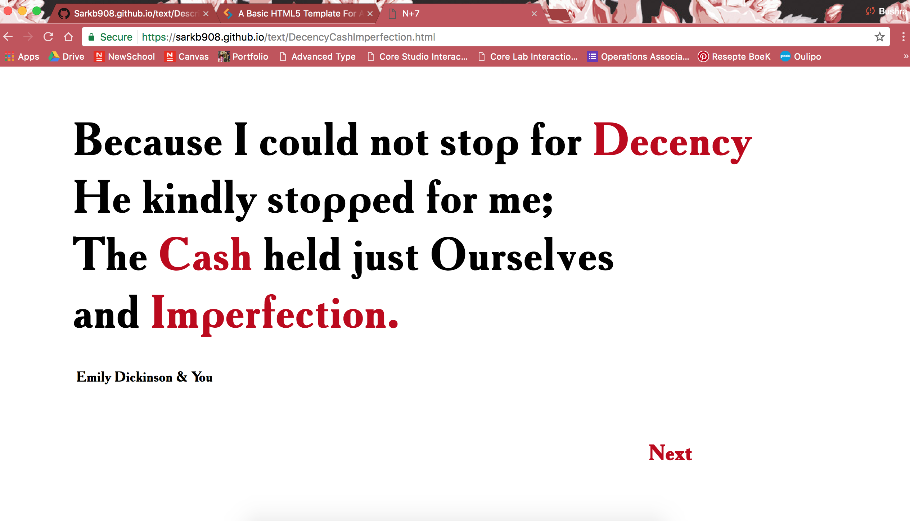
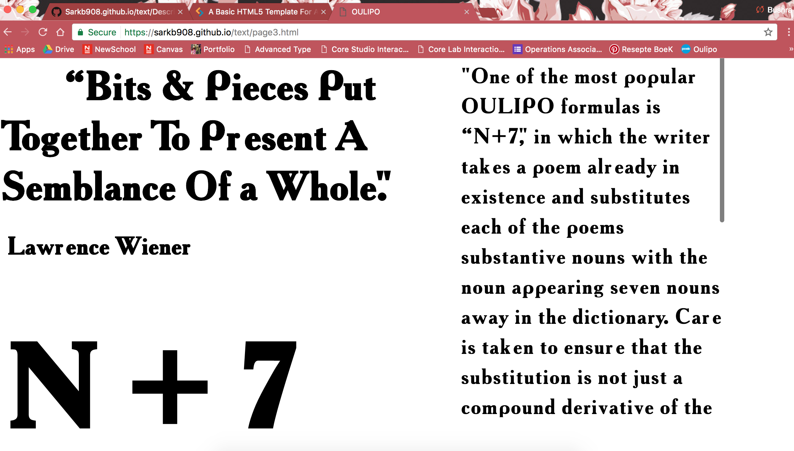

Bushra Sarker
Core Studio Interaction
“Because I could not stop for Death,” a poem by Emily Dickinson meets OULIPO, a group of writers and mathematicians who created formulas in which writers can recreate the literature in any way they please under the constraints of the formula. The one recreated here is “N+7” where the reader replaces a noun in the sentence with the 7th noun found after it in the dictionary. First the user approaches the initial page which presents the original poem. The nouns are marked in red, which jumps to the 7th noun in the dictionary when clicked. With this the user can recreate Emily Dickinson’s poem and now become the writer.
 <<<<<<< HEADThere are a number of combinations that the user can make with the “N+7” formula. Here are the nouns that are presented seven nouns after the original ones found in the dictionary. The user is able to make a number of different combinations that results to an entire different story.

When the user completes their writing, they may move onto the next page which contains a description of OULIPO and N+7. Here the user is presented with further information of what they had just created, allowing them to get a better understanding of where this type of literature was derived from. The final page is illustrated with a quote by Lawrence Wiener that captures the essence of the formula that can applied to writing. =======
There are a number of combinations that can be made with the formula “N+7” in use and here are the 7th nouns in the dictionary.
When the user completes their writing, they may move onto the next page which contains a description of OULIPO and N+7. The final page is illustrated with a quote by Lawrence Wiener that captures the essence of the formula that can applied to writing. >>>>>>> origin/master
